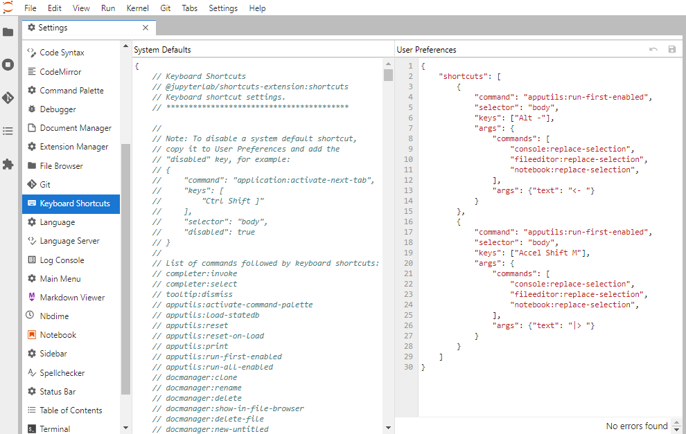

Installation notes
If you have already installed Git, Latex, or any of the R or Python related packages please uninstall these and follow the instructions below to reinstall them (make sure to also remove any user configuration files and backup them if desired). In order to be able to support you effectively and minimize setup issues and software conflicts, we suggest you install the required software as specified below.
In all the sections below, if you are presented with the choice to download either a 64-bit (also called x64) or a 32-bit (also called x86) version of the application always choose the 64-bit version.
Once you have completed these installation instructions, make sure to follow the post-installation notes at the end to check that all software is setup correctly.
Web browser
In DSCI 310 we will be using many tools that work most reliably on Google Chrome and Firefox (including our online quiz software), so we recommend that you use one of these browsers.
- To install Chrome, go to https://www.google.com/chrome/, click on Download Chrome and follow the instructions on the website to finish the installation.
- To install Firefox, go to https://www.mozilla.org/en-US/firefox/new/, click on Download Firefox and follow the instructions on the website to finish the installation.
Bash shell
Apple recently changed the Mac default shell in the Terminal to Zsh, however, we aim to teach with the same shell across all three operating systems we support, which is the Bash shell. Thus, we ask that you change the default shell in your Terminal to Bash by opening the Terminal (how to video) and typing:
chsh -s /bin/bashYou will have to quit all instances of open Terminals and then restart the Terminal for this to take effect.
Visual Studio Code
Installing
The open-source text editor Visual Studio Code (VS Code) is both a powerful text editor and a full-blown Python IDE, which we will use for more complex analysis. You can download and install the macOS version of VS Code from the VS code website https://code.visualstudio.com/download. Once the download is finished, click Open with Archive utility, and move the extracted VS Code application from Downloads to Applications. In addition to reading the getting started instructions, be sure to follow the Launching from the command line steps as well.
You can test that VS code is installed and can be opened from Terminal by restarting terminal and typing the following command:
code --versionyou should see something like this if you were successful:
1.62.2
3a6960b964327f0e3882ce18fcebd07ed191b316
arm64Note: If you get an error message such as
-bash: code: command not found, but you can see the VS Code application has been installed, then something went wrong with setting up the launch from the command line. Try following these instructions again, in particular you might want to try the described manual method of adding VS Code to your path.
GitHub
In DSCI 310 we will use the publicly available GitHub.com. If you do not already have an account, please sign up for one at GitHub.com
Sign up for a free account at GitHub.com if you dont have one already.
Git
We will be using the command line version of Git as well as Git through RStudio and JupyterLab. Some of the Git commands we will use are only available since Git 2.23, so if your Git is older than this version, we ask you to update it using the Xcode command line tools (not all of Xcode), which includes Git.
Open Terminal and type the following command to install Xcode command line tools:
xcode-select --installAfter installation, in terminal type the following to ask for the version:
git --versionyou should see something like this (does not have to be the exact same version) if you were successful:
git version 2.30.1 (Apple Git-130)Note: If you run into trouble, please see that Install Git Mac OS section from Happy Git and GitHub for the useR for additional help or strategies for Git installation.
Configuring Git user info
Next, we need to configure Git by telling it your name and email. To do this, type the following into the terminal (replacing Jane Doe and janedoe@example.com, with your name and email that you used to sign up for GitHub, respectively):
git config --global user.name "Jane Doe"
git config --global user.email janedoe@example.comNote: To ensure that you havent made a typo in any of the above, you can view your global Git configurations by either opening the configuration file in a text editor (e.g.via the command
code ~/.gitconfig) or by typinggit config --list --global.
Setting VS Code as the default editor
To make programs run from the terminal (such as git) use vscode by default,
we will modify ~/.bash_profile. First, open it using VS Code (this will also
create the file if it doesnt already exist):
code ~/.bash_profileNote: If you see any existing lines in your
~/.bash_profilerelated to a previous Python or R installation, please remove these.
Now append the following lines to ~/.bash_profile:
# Set the default editor for programs launch from terminal
EDITOR="code --wait"
VISUAL=$EDITOR # Use the same value as for "EDITOR" in the line aboveThen save the file and exit VS Code.
Note: Most terminal programs will read the
EDITORenvironmental variable when determining which editor to use, but some readVISUAL, so were setting both to the same value.
In some cases, VScode is not set as the default text editor for git even after appending the two lines above, so to make sure it is registered properly, also run the following from your terminal:
git config --global core.editor "code --wait"On MacOS,
VScode sometimes reads a different configuration file than your other programs.
To avoid this,
open your ~/.bashrc file:
code ~/.bashrcAnd append the following lines:
if [ -f ~/.bash_profile ]; then . ~/.bash_profile; fiPython, Conda, and JupyterLab
Python and Conda
In DSCI 310 we will be using Python and the conda pacakge manager.
Currently there is no official native Miniconda installation for Macs with
the ARM system architecture. As an alternative, we will install the unofficial
Miniforge platform.
To install it, first download the
OS X arm64 installer.
Ensure it was placed in your Downloads folder. Next, open the terminal and run the following:
bash /Users/$(whoami)/Downloads/Miniforge3-MacOSX-arm64.sh This will start the installation process, follow the directions that appear in the terminal.
Initially, you will be greeted with a message like this:
Welcome to Miniforge3 4.10.3-10
In order to continue the installation process, please review the license
agreement.
Please, press ENTER to continuePress ENTER. You may have to use your arrow keys to scroll down to accept the terms and conditions. Scroll down until you see
Do you accept the license terms? [yes|no]Type yes and then hit ENTER. You will be asked if you would like to keep the
default installation location. Press ENTER to accept the default location.
Now the terminal will show you the installation process. Once it is completed
you will see the following message:
Do you wish the installer to initialize Miniforge3
by running conda init? [yes|no]IMPORTANT: type no and then press ENTER.
Now, run the following in the terminal to open your
.bash_profile in VSCode:
code ~/.bash_profileNow append the following line to ~/.bash_profile, replace echo $USER into
the terminal.
export PATH="/Users/<USERNAME>/miniforge3/bin:$PATH"Afterwards, restart the terminal. If the installation was successful,
you will see (miniforge3) prepending to your prompt string.
To confirm that conda is working, you can ask it which version was installed:
conda --versionwhich should return something like this:
conda 4.11.0Note: If you see
zsh: command not found: conda, see the section on Bash above to set your default Terminal shell to Bash as opposed to Zsh.Or, if you see
bash: command not found: condabe sure you typed your username correctly when modifying~/.bash_profileabove.
Next, type the following to ask for the version of Python:
python --versionwhich should return Python 3.9.0 or greater:
Python 3.9.5Note: If instead you see
Python 2.7.Xyou installed the wrong version. Uninstall the Miniconda you just installed (which usually lives in the/optdirectory), and try the installation again, selecting Python 3.9.
Installing Python packages
To install packages individually,
we can now use the following command:
conda install <package-name>.
After running that command
conda will show you the packages that will be downloaded,
and you can press enter to proceed with the installation.
If you want to answer yes by default and skip this confirmation step,
you can replace conda install with conda install -y.
Also note that we may occasionally need to install packages using pip,
the standard Python package manager.
The installation command is very similar to that of conda: pip install <package-name>.
Lets try this out in the next section,
by installing some of the key packages we will use in DSCI 310.
JupyterLab setup
JupyterLab is a coding environment that we will be using frequently
throughout the course and pandas is one of the key Python data analyses packages.
The Jupytext Python package and the JupyterLab git extension facilitates
using notebooks in JupyterLab together with Git & GitHub.
The spellchecker helps us correcting typos in our writing
and the LSP packages fill the same function for our code.
Install them via the following commands:
conda install jupyterlab jupyterlab-git jupyterlab-spellchecker jupytext jupyterlab-lsp jupyter-lsp-pythonTo test that your JupyterLab installation is functional, you can type jupyter lab into a terminal,
which should open a new tab in your default browser with the JupyterLab interface.
To exit out of JupyterLab you can click File -> Shutdown,
or go to the terminal from which you launched JupyterLab and hold Ctrl while pressing c twice.
R, XQuartz, IRkernel, and RStudio
R is the second language that we will be using frequently in this course. We will use R both in Jupyter notebooks and in RStudio.
R
Go to https://cran.r-project.org/bin/macosx/ and download the latest version of R for Mac. Open the file and follow the installer instructions.
After installation, open a new terminal window and type the following:
R --versionYou should see something like this if you were successful:
R version 4.1.1 (2021-08-10) -- "Kick Things"
Copyright (C) 2021 The R Foundation for Statistical Computing
Platform: aarch64-apple-darwin20 (64-bit)
R is free software and comes with ABSOLUTELY NO WARRANTY.
You are welcome to redistribute it under the terms of the
GNU General Public License versions 2 or 3.
For more information about these matters see
https://www.gnu.org/licenses/.Note: Although it is possible to install R through conda, we highly recommend not doing so. In case you have already installed R using conda you can remove it by executing
conda uninstall r-base.
XQuartz
Some R packages rely on the dependency XQuartz which no longer ships with the Mac OS, thus we need to install it separately. Download it from here: https://www.xquartz.org/ and follow the installation instructions.
RStudio
Download the macOS Desktop version (not Pro) of RStudio Preview from https://rstudio.com/products/rstudio/download/preview/. Open the file and follow the installer instructions.
To see if you were successful, try opening RStudio by clicking on its icon (from Finder, Applications or Launchpad).
Now we are going to change RStudios Insert Pipe shortcut so that it inserts
the new native pipe operator |>.
Go to Tools > Global Options > Code > Editing and tick the following option:

Once the change is made you can try in the RStudio console Command + Shift + m to check if works.
Installing R packages
Next, install the key R packages needed for the course by opening up RStudio and typing the following into the R console inside RStudio:
install.packages(c("cowplot", "GGally", "kknn", "scales", "tidyverse", "tidymodels"))IRkernel
The IRkernel package is needed to make R work in Jupyter notebooks.
To enable this kernel in the notebooks, install by pasting the following command into the RStudio Console:
install.packages('IRkernel')Next, open a terminal and type the following
(you cant use RStudio for this step
since it doesnt honor $PATH changes in ~/.bash_profile)
R -e "IRkernel::installspec()"To see if you were successful, try running JupyterLab and check if you have a working R kernel. To launch JupyterLab, type the following in Terminal:
jupyter labA browser should have launched and you should see a page that looks like the screenshot below. Now click on R notebook (circled in red on the screenshot below) to launch an JupyterLab with an R kernel.

Sometimes a kernel loads, but doesnt work as expected.
To test whether your installation was done correctly now type library(tidyverse)
in the code cell and click on the run button to run the cell.
If your R kernel works you should see something like the image below:

To improve the experience of using R in JupyterLab,
we will add keyboard shortcuts for inserting the common R operators <- and |>.
Go to Settings -> Advanced Settings Editor -> Keyboard Shortcuts
and paste the following in the rightmost panel that says User Preferences
(replacing the {}):
{
"shortcuts": [
{
"command": "apputils:run-first-enabled",
"selector": "body",
"keys": ["Alt -"],
"args": {
"commands": [
"console:replace-selection",
"fileeditor:replace-selection",
"notebook:replace-selection",
],
"args": {"text": "<- "}
}
},
{
"command": "apputils:run-first-enabled",
"selector": "body",
"keys": ["Accel Shift M"],
"args": {
"commands": [
"console:replace-selection",
"fileeditor:replace-selection",
"notebook:replace-selection",
],
"args": {"text": "|> "}
}
}
]
}After you have pasted this text,
hit the small floppy disk in the top right (or Ctrl + s)
to save the settings.
Here is a screenshot of what it looks like with the settings saved:

To check that the extension is working,
open JupyterLab,
launch an R notebook,
and try inserting the operators by pressing Alt + - or Command + Shift + m, respectively.
You could add any arbitrary text insertion command the same way,
but this is all that we suggest for this course.
LaTeX
We will install the lightest possible version of LaTeX and its necessary packages as possible so that we can render Jupyter notebooks and R Markdown documents to html and PDF. If you have previously installed LaTeX, please uninstall it before proceeding with these instructions.
First, run the following command to make sure that /usr/local/bin is writable:
sudo chown -R $(whoami):admin /usr/local/binNote: You might be asked to enter your password during installation.
Now open RStudio and run the following commands to install the tinytex package and setup tinytex:
install.packages('tinytex')
tinytex::install_tinytex()You can check that the installation is working by opening a terminal and asking for the version of latex:
latex --versionYou should see something like this if you were successful:
pdfTeX 3.141592653-2.6-1.40.23 (TeX Live 2022/dev)
kpathsea version 6.3.4/dev
Copyright 2021 Han The Thanh (pdfTeX) et al.
There is NO warranty. Redistribution of this software is
covered by the terms of both the pdfTeX copyright and
the Lesser GNU General Public License.
For more information about these matters, see the file
named COPYING and the pdfTeX source.
Primary author of pdfTeX: Han The Thanh (pdfTeX) et al.
Compiled with libpng 1.6.37; using libpng 1.6.37
Compiled with zlib 1.2.11; using zlib 1.2.11
Compiled with xpdf version 4.03The above is all we need to have LaTeX work with R Markdown documents, however for Jupyter we need to add several more packages. Do this by opening a terminal and copying the following there press enter:
tlmgr install eurosym \
adjustbox \
caption \
collectbox \
enumitem \
environ \
fp \
jknapltx \
ms \
parskip \
pgf \
rsfs \
tcolorbox \
titling \
trimspaces \
ucs \
ulem \
upquote \
lwarp \
oberdiek \
pgfplots \
bbm-macros \
cmap \
polyglossia \
gnu-freefont \
fncychap \
wrapfig \
capt-of \
needspace \
tabulary \
varwidth \
fancyhdr \
titlesec \
ucharclassesTo test that your latex installation is working with jupyter notebooks,
launch jupyter lab from a terminal and open either a new notebook
or the same one you used to test IRkernel above.
Go to File -> Export notebook as... -> Export Notebook to PDF.
If the PDF file is created,
your LaTeX environment is set up correctly.
Pandoc
You will also need to install Pandoc to convert R Markdown documents to PDF. To do so visit the Pandoc website and follow their installation instructions.
WebPDF export
Jupyter recently added another way to export notebooks to PDF
which does not require Latex
and makes the exported PDF look similar to notebooks exported to HTML.
This requires the pyppeteer package,
which we can install as follows.
conda install pyppeteer
pyppeteer-installTry this by going to File -> Export notebook as... -> Export Notebook to WebPDF.
Docker
You will use Docker to create reproducible, sharable, and shippable computing environments for your analyses. For this you will need a Docker account. You can sign up for a free one here.
After signing-up and signing into the Docker Store, go here: https://store.docker.com/editions/community/docker-ce-desktop-mac and click on the Get Docker button on the right hand side of the screen. Then, follow the installation instructions on that screen to install the stable version.
To test if Docker is working, after installation open the Docker app by clicking on its icon (from Finder, Applications or Launchpad). Next open Terminal and type the following:
docker run hello-worldyou should see something like this if you were successful:
Unable to find image 'hello-world:latest' locally
latest: Pulling from library/hello-world
93288797bd35: Pull complete
Digest: sha256:cc15c5b292d8525effc0f89cb299f1804f3a725c8d05e158653a563f15e4f685
Status: Downloaded newer image for hello-world:latest
Hello from Docker!
This message shows that your installation appears to be working correctly.
To generate this message, Docker took the following steps:
1. The Docker client contacted the Docker daemon.
2. The Docker daemon pulled the "hello-world" image from the Docker Hub.
(arm64v8)
3. The Docker daemon created a new container from that image which runs the
executable that produces the output you are currently reading.
4. The Docker daemon streamed that output to the Docker client, which sent it
to your terminal.
To try something more ambitious, you can run an Ubuntu container with:
$ docker run -it ubuntu bash
Share images, automate workflows, and more with a free Docker ID:
https://hub.docker.com/
For more examples and ideas, visit:
https://docs.docker.com/get-started/Post-installation notes
You have completed the installation instructions, well done ! We have created a script to help you check that your installation was successful, and to provide instructions for how you can troubleshoot any potential issues. To run this script, please execute the following command from your terminal.
bash <(curl -Ss https://raw.githubusercontent.com/UBC-DSCI/dsci-310-student/main/src/check_setup.sh)The output from running the script will look something like this:
# DSCI 310 setup check 1.0
If a program or package is marked as MISSING,
this means that you are missing the required version of that program or package.
Either it is not installed at all or the wrong version is installed.
The required version is indicated with a number and an asterisk (*),
e.g. 4.* means that all versions starting with 4 are accepted (4.0.1, 4.2.5, etc).
You can run the following commands to find out which version
of a program or package is installed (if any):
```
name_of_program --version # For system programs
conda list # For Python packages
R -q -e "installed.packages()[,c(Package, Version)]" # For R packages
```
Checking program and package versions...
## Operating system
ProductName: macOS
ProductVersion: 12.0
BuildVersion: 21A344
## System programs
OK rstudio 2021.09.0+351
OK R 4.1.1 (2021-08-10) -- "Kick Things"
OK python 3.9.7
OK conda 4.11.0
OK bash 3.2.57(1)-release (x86_64-apple-darwin20)
OK git 2.30.1 (Apple Git-130)
OK make 3.81
OK latex 3.141592653-2.6-1.40.23 (TeX Live 2022/dev)
OK tlmgr 5 +0200)
OK docker 20.10.8, build 3967b7d
OK code 1.62.2
## Python packages
MISSING pandas=1.*
MISSING pyppeteer=0.*
OK nbconvert=6.3.0
OK jupyterlab=3.2.4
OK jupyterlab-git=0.34.0
OK jupytext=1.13.3
OK jupyterlab-spellchecker=0.7.2
OK jupyterlab PDF-generation was successful.
MISSING jupyterlab WebPDF-generation failed. It seems like you did not run `pip install "nbconvert[webpdf]"` to install pyppeteer.
OK jupyterlab HTML-generation was successful.
## R packages
OK cowplot=1.1.1
OK GGally=2.1.2
OK kknn=1.3.1
OK scales=1.1.1
OK tidyverse=1.3.1
OK tidymodels=0.1.4
OK tinytex=0.36
OK rmarkdown PDF-generation was successful.
OK rmarkdown HTML-generation was successful.
The above output has been saved to the file /Users/jbourak/check_setup.log
together with system configuration details and any detailed error messages about PDF and HTML generation.
You can open this folder in your file browser by typing `open .` (without the surrounding backticks).As you can see at the end of the output, a log file is saved in your current directory. We might ask you to upload this file if we need to troubleshoot your installation, so that we can help you more effectively. If any of your packages are marked as MISSING you will need to figure out what is wrong and possibly reinstall them. Once all packages are marked as OK we will ask you to submit this log file, so that we can confirm that your installation was successful. Details on where to submit will be provided later.
Note: In general you should be careful running scripts unless they come from a trusted source as in this case (just like how you should be careful when downloading and installing programs on your computer).
Attributions
- UBC MDS Software Stack Install Instructions
- Harvard CS109
- UBC STAT 545 licensed under the CC BY-NC 3.0
- Software Carpentry